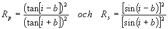

Polarisation
Det finns ytterligare en klass av fenomen som vi inte tittat på rörande ljus, och det är de som har med ljusets E-fälts riktning att göra. I
vår bild av ljuset som det elektriska fältet från en osciellerande dipol framgick att fältet var vinkelrätt mot utbredningsriktningen. Men när vi väl vet det finns det ju två riktningar kvar när vi har bestämt utbredningsrktningen. Valet av E-fältsriktning kallas ljusets polarisation.Den enklaste formen av polariserat ljus är den linjärpolariserade eller planpolariserade (orden betyder samma sak). E-fältet ligger där hela tiden i samma plan. Laddar man ner vår lilla
matlabsnutt och sätter fasskillnaden till noll ser man att detta blir fallet om vi har en x-komp och en y-komp som ligger i fas eller p ur fas. Resultaten kommer då att bilda vinkeln 45° mot xz-planet. Kör programmet och byt till p (skriv pi) i fasskillnad. Vad blir skillnaden? (!!)En fasskillnad på 180° mellan x- och y-komp ger alltså en polarisationriktningsvridning på 90°
Opedagogiskt men sant
!!För att förstå var i naturen vi hittar linjärpolariserat måste vi först titta på naturligt ljus (eller opolariserat, som man ibland säger). varje ljustutsändade atom ger där linjärpolariserat ljus, men eftersom de är helt okorrelerade kommer polarisationsriktningen att ändras varje gång en atom kroknar och en annar tar vid (på samma sätt som vi
konstaterade att begynnelsefasen ändras så ofta, vilket hade betydelse för interferens med ljus). Sådant ljus uppvisar inga polarisationsegenskaper eftersom variationerna i riktning blir så snabba att man inte kan detektera dem (och ännu mindre se resultatet av dem med ögonen).Låter man sådant ljus passera ett polarationsfilter (polaroid) kommer ljuset att bli linjärpolariserat, så låt oss se hur ett sådant fungerar: I ett genomskinligt plastmaterial bakar man in långa molekyltrådar, med samma riktning. Dessa har elektroner som är rörliga utmed trådarna (men inte vinkelrät mot dem) vilket innebär att om inkommande ljus är parallellt med trådarna kommer det att sätta dessa elektroner i rörelse vilket gör att ljuset absorberas. Bildar det en vinkel med trådarna kommer den komponent som ligger vinkelrät mot trådriktningen att transmitteras. (som bildar vinkeln
a med Ein i fig). Det ljus som transmitteras har alltså E-fältet, och därmed instensiteten:Malus lag
det ljus som kommer i genom filtret har alltså förlorat i intensitet enligt ovan och är linjärpolariserat i genomsläppsriktningen. Om det inkommande ljuset är linjärpolariserat bät den transmitterade intesiteten hälften av den inkommande (medelvärdet av cos²a för alla vinklar=1/2)
Sedan finns det andra polarisationstillstånd som uppkommer vid andra fasskillnader.
En viktig tillämpning av polarisation är elektrooptiska modulatorer, där man mellan två korsade polaroider placerar en dubbelbrytande kristall som ändrar fasförhållandet mellan komponenterna om det ligger ett yttre elektriskt fält över den men inte annars. Genom att ändra spänningen över kristaller kan man alltså bestämma hur mycket ljus som ska transmitteras genom den andra polaroiden.

Vid ljusets reflektion uppkommer också polarisationfenomen.
För att studera dem måste vi definiera begreppet infallsplan som det plan som innehåller infallande stråle och ytans normal. Vi brukar då kalla det ljus som har E-fältet i infallsplanet för TM, p, p eller ¤¤, medan det som ligger vinkelrätt mot infallsplanet kallas TE, s, s eller ^. Beteckningarna varierar mellan olika böcker, därav plottret.
Reflektansen för det inkommande ljuset blir nu för de bägge infallsriktningarna

Använd nu vår lilla snutt
fresnel.m för att se hur reflektansen (och dess E-fältsmotsvarighet) ändras med olika kombinationer av vinklar och index.Vi drar här nedan några slutsatser. Verifiera dem genom att köra programmet fler gånger med olika index.
För riktigt flacka vinklar stiger reflektansen mot 1 för bägge polarisationsriktningarna.
Ju mindre skillnad i brytningsindex ju mindre reflektans.
För små infallsvinklar blir reflektansen , vilket för en glas/luftyta ger ca 0.04, dvs 4%
För vinklar sådana att i+b=90° blir Rp=0 vilket innebär att allt ljus som reflekteras i denna vinkel blir s-pol. Eftersom minimet är ganska flackt, blir reflektansen även för kringliggande vinklar nära noll för p-pol. Det är i dessa fall som polaroidsolglasögon släcker ut reflexer?
Hur ska genomsläppsriktningen vara orienterad på dem om de ska släcka ut reflexer från havsytan? (
!!)Hur kan vi ta reda på vilket i som gör att i+b=90°?
Med en stunds arbete kommer fram till att i=arctan(n2/n1)
Till nästa
sida (gitter)Till nästa
kapitel (Fiberoptik)Till
innehållsförteckningen